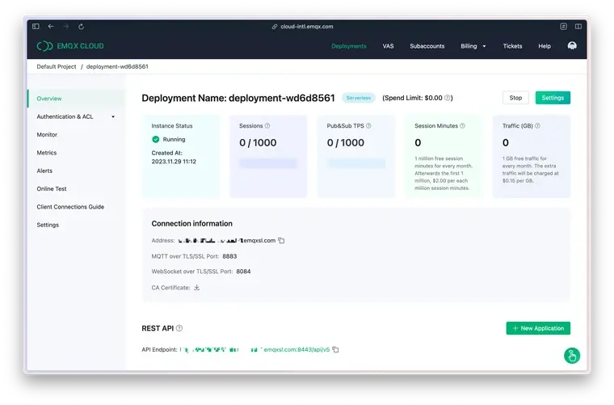

Руководство по MQTT.fx: функции, демонстрации и советы по использованию
Сюнь Оуян
16 декабря 2023 г.
Оглавление
Основная версия MQTT.fx 1.0 была разработана Йенсом Детерсом с использованием технологии JavaFX . Это было приложение виртуальной машины Java. К сожалению, MQTT.fx больше не поддерживается. Однако компания Softblade спонсировала разработку коммерческой версии MQTT.fx® 5.0, которая доступна по платной лицензии. В этой статье будет упоминаться версия MQTT.fx 1.0, если не указано иное.
Он содержит основные функции клиента MQTT:
Кроме того, MQTT.fx имеет и другие замечательные функции:
Но есть и некоторые недостатки:
Чтобы установить MQTT.fx, посетите страницу загрузки Softblade , чтобы получить доступ к последней версии MQTT.fx. Выберите подходящую версию для вашей операционной системы на этой странице.
Демонстрация основных возможностей MQTT с помощью MQTT.fx
Прежде чем продолжить, убедитесь, что у вас есть брокер MQTT для связи и тестирования.
EMQX Cloud Serverless — это полностью управляемый брокер MQTT в облаке, который быстро настраивается и идеально подходит для мелкомасштабных тестов IoT. Он предлагает 1 миллион бесплатных минут сеанса в месяц, что идеально подходит для обслуживания небольшого количества устройств.
Пожалуйста, следуйте нашему руководству для новичков. После регистрации вы получите экземпляр с информацией о подключении и сертификатом CA, отражающим обзор вашего развертывания.

Предварительный просмотр MQTT.fx
На рисунке ниже показана главная страница приложения. Верхняя часть содержит адресную строку подключения для MQTT Broker и соответствующие параметры конфигурации. Функциональные вкладки, расположенные под адресной строкой, состоят из пяти столбцов: Publish, Subscribe, Scripts, Broker Status и Log — эти столбцы управляют информацией журнала и функциями публикации, подписки и скриптинга приложения.
Каждая вкладка поддерживает перетаскивание в отдельное окно, как показано на следующем рисунке:
Сначала в главном интерфейсе MQTT.fx щелкните значок конфигурации рядом с адресной строкой подключения, чтобы получить доступ к настройкам.
После установки соединения можно начинать подписываться на сообщения. Поскольку протокол MQTT использует метод подписки/публикации, нам нужно подписаться на тему после подключения. После того, как сообщение в теме сгенерировано, мы можем получать сообщения из облака EMQX.
Нажмите на вкладку «Подписаться», чтобы войти /testTopic/1в поле темы. Затем нажмите Subscribeкнопку, и слева появится список подписанных тем. Текущее количество подписанных тем равно 0, как показано на следующем рисунке:
После этого мы опубликуем сообщение в Broker. Вернитесь к Publish, введите тему /testTopic/1и введите сообщение "hello world" в поле ввода сообщения, как показано на следующем рисунке:
Нажмите «Опубликовать», чтобы отправить сообщения и вернуться на вкладку «Подписаться». Мы можем обнаружить, что подписанная тема /testTopic/1получила сообщение, как показано на следующем рисунке:
Мы используем клиент MQTT.fx для отправки "hello world" в тему /testTopic/1в EMQX Cloud. Все клиенты, которые подписываются на эту тему, получат это сообщение, включая отправляющих клиентов, которые только что подписались на эту тему.
В качестве примера включения протокола SSL для подключения к облаку EMQX мы используем самоподписанную службу CA.
Откройте настройки, заполните поля Адрес брокера и Порт брокера ( broker.emqx.ioи 8883соответственно), как и для обычных подключений, выберите SSL/TLSпункт, выберите протокол TLSv1.2, отметьте галочкой Сертификат сервера, подписанный CA, а затем выберите приложение, как показано на рисунке ниже:
Нажмите Подключиться, и вы увидите, что значок замка справа закрыт, что означает, что SSL включен. Проверьте журнал, и вы найдете слова, связанные с портом подключения SSL 8883. Подключение к SSL/TLS успешно.
Откройте для себя расширенные возможности MQTT.fx
Вы можете настроить логику публикации сообщений более гибко, используя скрипт. Нажмите вкладку Script и Edit, чтобы изменить содержимое скрипта следующим образом:
function execute(action) {
mqttManager.publish("/testTopic/1", "hello world from script");
return action;
}
Среди них mqttManager— API для открытия функции скрипта MQTT.fx, включающая в себя в основном следующее:
Нажмите «Выполнить», вернитесь в столбец «Подписаться» и обнаружите, что сообщение добавлено с содержанием «hello world from the script». Функция script-publish работает нормально, как показано на рисунке ниже:
В журнале мы можем просмотреть процесс взаимодействия между MQTT.fx и EMQX Cloud, такой как подписка на темы, публикация сообщений, прием сообщений и т. д.:
В MQTT.fx при создании или редактировании соединения можно использовать прокси. Просто выберите опцию «Прокси», отметьте галочкой поле «Использовать HTTP-прокси» и введите информацию о вашем прокси-сервере.
Использование прокси-сервера позволяет направлять ваш трафик MQTT через указанный сервер. Это особенно полезно для обхода сетевых ограничений или повышения безопасности связи.
Часто задаваемые вопросы о MQTT.fx
В: Можно ли установить несколько подключений одновременно в MQTT.fx?
О : Несмотря на свои расширенные возможности, MQTT.fx допускает только одно подключение MQTT за раз, что может ограничить его использование в сценариях отладки с несколькими подключениями.
В: Можно ли отлаживать MQTT через WebSocket с помощью MQTT.fx?
О : MQTT.fx не поддерживает протокол WebSocket, что делает его непригодным для сценариев тестирования MQTT через WebSocket.
В: С какой версии MQTT.fx поддерживает протокол MQTT 5.0?
О : MQTT.fx начал поддерживать протокол MQTT 5.0 с версии 5.0 и далее. Это обновление привело программное обеспечение в соответствие с последними стандартами MQTT, добавив новые возможности и улучшив пользовательский опыт.
В: MQTT.fx бесплатен для использования? О : MQTT.fx 5.0 предлагает 3-месячную пробную лицензию бесплатно. После пробного периода доступны различные платные варианты лицензирования, включая лицензию частного пользователя за 49,90 евро, индивидуальную лицензию за 220,00 евро/год, групповую лицензию за 650,00 евро/год и корпоративную лицензию за 1.900,00 евро/год, все цены включают НДС для коммерческого использования.
MQTTX: лучшая альтернатива MQTT.fx, которую стоит попробовать в 2024 году
Мы рекомендуем использовать MQTTX, доступный по адресу mqttx.app , в качестве альтернативы. MQTTX — это клиентский инструментарий MQTT «все в одном», совместимый с macOS, Windows, Linux и Docker. Он предлагает версии для настольных ПК, CLI и веб-сайтов. MQTTX полностью соответствует стандартам MQTT 5.0, 3.1.1 и 3.1, улучшая разработку и тестирование приложений MQTT с помощью расширенных функций, таких как скрипты, бенчмарки и моделирование данных IoT.
Поговорите с экспертом
Клиентские инструменты MQTT
Сюнь Оуян
Стажер EMQ FE, участие в обслуживании MQTTX.
Подпишитесь на наши блоги
Подписаться →
Похожие посты
4 декабря 2023 г.Шифан Юй
Руководство по MQTT Explorer: функции, демонстрации и советы по использованию
В этой статье вы найдете краткий обзор основ использования MQTT Explorer, а также основных концепций и использования протокола MQTT.
11 декабря 2023 г.Шифан Юй
Руководство по MQTTBox: функции, демонстрации и советы по использованию
В этой статье вы найдете краткий обзор основ использования MQTTBox, а также основных концепций и использования протокола MQTT.
27 авг. 2021 г.Шифан Юй
Использование MQTTLens для подключения к облаку EMQX
В этой статье вы найдете краткий обзор основ использования MQTTLens, а также основных концепций и использования протокола MQTT.
Подпишитесь на нашу рассылку
Английский
Продукция
Ресурсы
Решения
MQTT
Компания